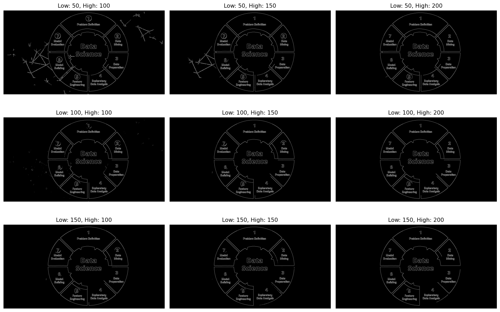

0.1 The Detective Story: Teaching Computers to See Patterns
Imagine you’re a detective looking at a crime scene photo. Your brain instantly picks out: - The outline of a footprint in the mud - The edge of a broken window - The shape of a mysterious object on the table
How do you do this so effortlessly? You’re detecting edges and patterns—the fundamental building blocks of vision.
Today, we’re going to teach computers this same superpower. By the end of this post, your computer will be able to find shapes, count objects, and even detect specific patterns in any image!
0.2 The Edge Detection Revolution
Edges are where the magic happens. They’re the boundaries between different regions in an image—where one object ends and another begins. Think of them as the “outlines” in a coloring book.
0.2.1 Why Edges Matter
Before we dive into code, let’s understand why edge detection changed everything:
The Canny algorithm has two important parameters—think of them as sensitivity controls:
Code
def explore_canny_thresholds(image, low_thresholds, high_thresholds):"""Explore different Canny threshold combinations""" gray = cv2.cvtColor(image, cv2.COLOR_RGB2GRAY) plt.figure(figsize=(15, 10)) plot_idx =1for low in low_thresholds:for high in high_thresholds: edges = cv2.Canny(gray, low, high) plt.subplot(len(low_thresholds), len(high_thresholds), plot_idx) plt.imshow(edges, cmap='gray') plt.title(f"Low: {low}, High: {high}") plt.axis('off') plot_idx +=1 plt.tight_layout() plt.show()# Test different threshold combinationslow_thresholds = [50, 100, 150]high_thresholds = [100, 150, 200]explore_canny_thresholds(img_rgb, low_thresholds, high_thresholds)

0.3.2 The Magic Behind Canny
Here’s what happens inside the Canny algorithm (don’t worry, OpenCV does this for you!):
Blur the image to reduce noise
Calculate gradients to find intensity changes
Non-maximum suppression to thin the edges
Double thresholding to classify edge pixels
Edge tracking to connect broken edge segments
0.4 From Edges to Shapes: Contour Detection
Edges are great, but contours are even better! A contour is a curve that connects all the edge points around an object’s boundary. Think of it as tracing around objects with your finger.
Now it’s your turn! Try building one of these applications:
0.9.1 🎯 Challenge 1: Document Page Counter
Code
def count_pages(image):"""Count rectangular pages/documents in an image"""# Your code here!# Hint: Look for large rectangular contourspass
0.9.2 🎯 Challenge 2: Parking Space Detector
Code
def detect_parking_spaces(image):"""Detect empty parking spaces (rectangular regions)"""# Your code here!# Hint: Look for rectangular shapes of a certain sizepass
0.9.3 🎯 Challenge 3: Playing Card Detector
Code
def detect_playing_cards(image):"""Detect playing cards in an image"""# Your code here!# Hint: Cards are rectangular with a specific aspect ratiopass
You’ve just taught computers to see patterns and shapes! This is a huge milestone—you’re now working with the same techniques used in industrial quality control, medical imaging, and autonomous vehicles.
Reuse
CC BY-NC-SA 4.0
Citation
BibTeX citation:
@online{2025,
author = {, Hasan},
title = {Finding {Patterns:} {Edges,} {Contours,} and {Shapes}},
date = {2025-01-22},
url = {https://hasangoni.quarto.pub/hasan-blog-post/posts/series/cv-foundations/04-finding-patterns.html},
langid = {en}
}
---title: "Finding Patterns: Edges, Contours, and Shapes"author: "Hasan"date: 2025-01-22categories: [computer-vision, edge-detection, contours, opencv]tags: [canny, contours, shapes, pattern-recognition]image: "images/feature-magic-header.jpg"toc: trueseries: name: "Computer Vision Foundations" number: 4format: html: defaultjupyter: python3---## The Detective Story: Teaching Computers to See PatternsImagine you're a detective looking at a crime scene photo. Your brain instantly picks out:- The outline of a footprint in the mud- The edge of a broken window- The shape of a mysterious object on the tableHow do you do this so effortlessly? You're detecting **edges** and **patterns**—the fundamental building blocks of vision.Today, we're going to teach computers this same superpower. By the end of this post, your computer will be able to find shapes, count objects, and even detect specific patterns in any image!## The Edge Detection Revolution**Edges** are where the magic happens. They're the boundaries between different regions in an image—where one object ends and another begins. Think of them as the "outlines" in a coloring book.### Why Edges MatterBefore we dive into code, let's understand why edge detection changed everything:- **Object Recognition**: Edges define object boundaries- **Feature Extraction**: Corners and curves are key features- **Noise Reduction**: Edges help separate signal from noise- **Compression**: JPEG uses edge information to compress images## Your First Edge Detector: The Canny AlgorithmThe **Canny edge detector** is the gold standard—it's been the go-to algorithm for over 30 years! Here's how it works:```{python}#| eval: trueimport cv2import numpy as npimport matplotlib.pyplot as plt# Load and prepare imageimg = cv2.imread('images/image.jpg')img_rgb = cv2.cvtColor(img, cv2.COLOR_BGR2RGB)gray = cv2.cvtColor(img_rgb, cv2.COLOR_RGB2GRAY)# Apply Canny edge detectionedges = cv2.Canny(gray, 50, 150)# Display the resultsplt.figure(figsize=(15, 5))plt.subplot(1, 3, 1)plt.imshow(img_rgb)plt.title("Original Image")plt.axis('off')plt.subplot(1, 3, 2)plt.imshow(gray, cmap='gray')plt.title("Grayscale")plt.axis('off')plt.subplot(1, 3, 3)plt.imshow(edges, cmap='gray')plt.title("Canny Edges")plt.axis('off')plt.tight_layout()plt.show()print(f"Found edges in {np.sum(edges >0)} pixels out of {edges.size} total pixels")```**🎯 Try it yourself!** [Open in Colab](https://colab.research.google.com/github/hasanpasha/quarto_blog_hasan/blob/main/notebooks/cv-foundations-04-finding-patterns.ipynb)### Understanding the Canny ParametersThe Canny algorithm has two important parameters—think of them as sensitivity controls:```{python}#| eval: truedef explore_canny_thresholds(image, low_thresholds, high_thresholds):"""Explore different Canny threshold combinations""" gray = cv2.cvtColor(image, cv2.COLOR_RGB2GRAY) plt.figure(figsize=(15, 10)) plot_idx =1for low in low_thresholds:for high in high_thresholds: edges = cv2.Canny(gray, low, high) plt.subplot(len(low_thresholds), len(high_thresholds), plot_idx) plt.imshow(edges, cmap='gray') plt.title(f"Low: {low}, High: {high}") plt.axis('off') plot_idx +=1 plt.tight_layout() plt.show()# Test different threshold combinationslow_thresholds = [50, 100, 150]high_thresholds = [100, 150, 200]explore_canny_thresholds(img_rgb, low_thresholds, high_thresholds)```### The Magic Behind CannyHere's what happens inside the Canny algorithm (don't worry, OpenCV does this for you!):1. **Blur** the image to reduce noise2. **Calculate gradients** to find intensity changes3. **Non-maximum suppression** to thin the edges4. **Double thresholding** to classify edge pixels5. **Edge tracking** to connect broken edge segments## From Edges to Shapes: Contour DetectionEdges are great, but **contours** are even better! A contour is a curve that connects all the edge points around an object's boundary. Think of it as tracing around objects with your finger.```{python}#| eval: true# Find edges firstgray = cv2.cvtColor(img_rgb, cv2.COLOR_RGB2GRAY)edges = cv2.Canny(gray, 50, 150)# Find contourscontours, hierarchy = cv2.findContours(edges, cv2.RETR_EXTERNAL, cv2.CHAIN_APPROX_SIMPLE)print(f"Found {len(contours)} contours!")# Draw contours on the original imageimg_with_contours = img_rgb.copy()cv2.drawContours(img_with_contours, contours, -1, (0, 255, 0), 2)# Display resultsplt.figure(figsize=(15, 5))plt.subplot(1, 3, 1)plt.imshow(img_rgb)plt.title("Original")plt.axis('off')plt.subplot(1, 3, 2)plt.imshow(edges, cmap='gray')plt.title("Edges")plt.axis('off')plt.subplot(1, 3, 3)plt.imshow(img_with_contours)plt.title(f"Contours ({len(contours)} found)")plt.axis('off')plt.tight_layout()plt.show()```### Analyzing Contour PropertiesOnce we have contours, we can learn a lot about each shape:```{python}#| eval: truedef analyze_contours(contours, image):"""Analyze properties of each contour""" img_analysis = image.copy()for i, contour inenumerate(contours):# Calculate contour properties area = cv2.contourArea(contour) perimeter = cv2.arcLength(contour, True)# Skip tiny contours (probably noise)if area <100:continue# Get bounding rectangle x, y, w, h = cv2.boundingRect(contour)# Calculate aspect ratio aspect_ratio =float(w) / h# Calculate extent (contour area / bounding rectangle area) rect_area = w * h extent =float(area) / rect_area# Draw bounding rectangle cv2.rectangle(img_analysis, (x, y), (x + w, y + h), (255, 0, 0), 2)# Add text with properties text =f"#{i}: A={int(area)}, AR={aspect_ratio:.2f}" cv2.putText(img_analysis, text, (x, y-10), cv2.FONT_HERSHEY_SIMPLEX, 0.5, (255, 0, 0), 1)print(f"Contour {i}:")print(f" Area: {area:.0f} pixels")print(f" Perimeter: {perimeter:.0f} pixels")print(f" Aspect Ratio: {aspect_ratio:.2f}")print(f" Extent: {extent:.2f}")print()return img_analysis# Analyze our contoursanalyzed_img = analyze_contours(contours, img_rgb)plt.figure(figsize=(12, 8))plt.imshow(analyzed_img)plt.title("Contour Analysis")plt.axis('off')plt.show()```## Shape Detection: Teaching Computers GeometryNow for the really cool part—detecting specific shapes! Let's build a shape classifier:```{python}#| eval: truedef classify_shape(contour):"""Classify a contour as a specific shape"""# Approximate the contour to reduce number of points epsilon =0.02* cv2.arcLength(contour, True) approx = cv2.approxPolyDP(contour, epsilon, True)# Get number of vertices vertices =len(approx)# Calculate aspect ratio x, y, w, h = cv2.boundingRect(contour) aspect_ratio =float(w) / h# Classify based on number of vertices and aspect ratioif vertices ==3:return"Triangle"elif vertices ==4:if0.95<= aspect_ratio <=1.05:return"Square"else:return"Rectangle"elif vertices ==5:return"Pentagon"elif vertices >5:# Check if it's circular area = cv2.contourArea(contour) perimeter = cv2.arcLength(contour, True) circularity =4* np.pi * area / (perimeter * perimeter)if circularity >0.7:return"Circle"else:return"Polygon"else:return"Unknown"def detect_shapes(image):"""Detect and classify shapes in an image"""# Preprocessing gray = cv2.cvtColor(image, cv2.COLOR_RGB2GRAY) blurred = cv2.GaussianBlur(gray, (5, 5), 0) edges = cv2.Canny(blurred, 50, 150)# Find contours contours, _ = cv2.findContours(edges, cv2.RETR_EXTERNAL, cv2.CHAIN_APPROX_SIMPLE)# Classify shapes result_img = image.copy() shape_counts = {}for contour in contours:# Skip small contoursif cv2.contourArea(contour) <500:continue# Classify the shape shape = classify_shape(contour)# Count shapes shape_counts[shape] = shape_counts.get(shape, 0) +1# Draw contour and label cv2.drawContours(result_img, [contour], -1, (0, 255, 0), 2)# Get centroid for text placement M = cv2.moments(contour)if M["m00"] !=0: cx =int(M["m10"] / M["m00"]) cy =int(M["m01"] / M["m00"]) cv2.putText(result_img, shape, (cx-30, cy), cv2.FONT_HERSHEY_SIMPLEX, 0.6, (255, 0, 0), 2)return result_img, shape_counts# Test shape detectionshapes_img, shape_counts = detect_shapes(img_rgb)plt.figure(figsize=(12, 8))plt.imshow(shapes_img)plt.title("Shape Detection Results")plt.axis('off')plt.show()print("Detected shapes:")for shape, count in shape_counts.items():print(f" {shape}: {count}")```## Real-World Application: Coin CounterLet's build something practical—a coin counting system:```{python}#| eval: truedef count_coins(image):"""Count circular objects (coins) in an image"""# Convert to grayscale gray = cv2.cvtColor(image, cv2.COLOR_RGB2GRAY)# Apply median blur to reduce noise blurred = cv2.medianBlur(gray, 5)# Use HoughCircles to detect circular objects circles = cv2.HoughCircles( blurred, cv2.HOUGH_GRADIENT, dp=1, minDist=30, param1=50, param2=30, minRadius=10, maxRadius=100 ) result_img = image.copy() coin_count =0if circles isnotNone: circles = np.round(circles[0, :]).astype("int") coin_count =len(circles)# Draw detected circlesfor (x, y, r) in circles: cv2.circle(result_img, (x, y), r, (0, 255, 0), 2) cv2.circle(result_img, (x, y), 2, (0, 0, 255), 3) cv2.putText(result_img, f"Coin", (x-20, y-r-10), cv2.FONT_HERSHEY_SIMPLEX, 0.5, (255, 0, 0), 1)return result_img, coin_count# Test coin counting (works best with images of coins on a plain background)coins_img, coin_count = count_coins(img_rgb)plt.figure(figsize=(12, 8))plt.imshow(coins_img)plt.title(f"Coin Detection - Found {coin_count} coins")plt.axis('off')plt.show()```## Advanced Pattern Detection: Template MatchingSometimes you want to find a specific pattern or object. Template matching is perfect for this:```{python}#| eval: truedef find_template(image, template, threshold=0.8):"""Find template in image using template matching"""# Convert both to grayscale gray_img = cv2.cvtColor(image, cv2.COLOR_RGB2GRAY) gray_template = cv2.cvtColor(template, cv2.COLOR_RGB2GRAY)# Perform template matching result = cv2.matchTemplate(gray_img, gray_template, cv2.TM_CCOEFF_NORMED)# Find locations where matching exceeds threshold locations = np.where(result >= threshold)# Draw rectangles around matches result_img = image.copy() h, w = gray_template.shapefor pt inzip(*locations[::-1]): # Switch x and y coordinates cv2.rectangle(result_img, pt, (pt[0] + w, pt[1] + h), (0, 255, 0), 2)return result_img, len(locations[0])# Create a simple template (you can crop from your image)# For demo, let's use a small patch from the original imagetemplate = img_rgb[50:150, 50:150] # 100x100 patchmatched_img, match_count = find_template(img_rgb, template, threshold=0.6)plt.figure(figsize=(15, 5))plt.subplot(1, 3, 1)plt.imshow(template)plt.title("Template to Find")plt.axis('off')plt.subplot(1, 3, 2)plt.imshow(img_rgb)plt.title("Original Image")plt.axis('off')plt.subplot(1, 3, 3)plt.imshow(matched_img)plt.title(f"Matches Found: {match_count}")plt.axis('off')plt.tight_layout()plt.show()```## Building a Complete Object Detection PipelineLet's combine everything into a comprehensive object detection system:```{python}#| eval: trueclass SimpleObjectDetector:def__init__(self):self.min_contour_area =100self.canny_low =50self.canny_high =150def preprocess(self, image):"""Preprocess image for better detection""" gray = cv2.cvtColor(image, cv2.COLOR_RGB2GRAY) blurred = cv2.GaussianBlur(gray, (5, 5), 0)return blurreddef find_objects(self, image):"""Find all objects in the image"""# Preprocess processed =self.preprocess(image)# Edge detection edges = cv2.Canny(processed, self.canny_low, self.canny_high)# Find contours contours, _ = cv2.findContours(edges, cv2.RETR_EXTERNAL, cv2.CHAIN_APPROX_SIMPLE)# Filter contours by area valid_contours = [c for c in contours if cv2.contourArea(c) >self.min_contour_area]return valid_contours, edgesdef analyze_objects(self, contours, image):"""Analyze detected objects""" results = [] result_img = image.copy()for i, contour inenumerate(contours):# Basic properties area = cv2.contourArea(contour) perimeter = cv2.arcLength(contour, True)# Bounding rectangle x, y, w, h = cv2.boundingRect(contour) aspect_ratio =float(w) / h# Shape classification shape = classify_shape(contour)# Store results obj_info = {'id': i,'area': area,'perimeter': perimeter,'aspect_ratio': aspect_ratio,'shape': shape,'bbox': (x, y, w, h) } results.append(obj_info)# Draw on image cv2.drawContours(result_img, [contour], -1, (0, 255, 0), 2) cv2.rectangle(result_img, (x, y), (x + w, y + h), (255, 0, 0), 1) cv2.putText(result_img, f"{shape} #{i}", (x, y-10), cv2.FONT_HERSHEY_SIMPLEX, 0.5, (255, 0, 0), 1)return results, result_imgdef detect(self, image):"""Complete detection pipeline""" contours, edges =self.find_objects(image) results, result_img =self.analyze_objects(contours, image)return {'objects': results,'result_image': result_img,'edges': edges,'object_count': len(results) }# Use the detectordetector = SimpleObjectDetector()detection_results = detector.detect(img_rgb)# Display resultsplt.figure(figsize=(15, 10))plt.subplot(2, 2, 1)plt.imshow(img_rgb)plt.title("Original Image")plt.axis('off')plt.subplot(2, 2, 2)plt.imshow(detection_results['edges'], cmap='gray')plt.title("Edge Detection")plt.axis('off')plt.subplot(2, 2, 3)plt.imshow(detection_results['result_image'])plt.title(f"Detected Objects: {detection_results['object_count']}")plt.axis('off')plt.subplot(2, 2, 4)# Create a summary plotobject_shapes = [obj['shape'] for obj in detection_results['objects']]shape_counts = {}for shape in object_shapes: shape_counts[shape] = shape_counts.get(shape, 0) +1if shape_counts: shapes =list(shape_counts.keys()) counts =list(shape_counts.values()) plt.bar(shapes, counts) plt.title("Object Type Distribution") plt.xticks(rotation=45)else: plt.text(0.5, 0.5, "No objects detected", ha='center', va='center', transform=plt.gca().transAxes) plt.title("No Objects Found")plt.tight_layout()plt.show()# Print detailed resultsprint("Detection Results:")print(f"Total objects found: {detection_results['object_count']}")print("\nObject details:")for obj in detection_results['objects']:print(f" Object {obj['id']}: {obj['shape']}")print(f" Area: {obj['area']:.0f} pixels")print(f" Aspect Ratio: {obj['aspect_ratio']:.2f}")print(f" Bounding Box: {obj['bbox']}")```## Your Challenge: Build a Practical ApplicationNow it's your turn! Try building one of these applications:### 🎯 **Challenge 1: Document Page Counter**```{python}#| eval: truedef count_pages(image):"""Count rectangular pages/documents in an image"""# Your code here!# Hint: Look for large rectangular contourspass```### 🎯 **Challenge 2: Parking Space Detector**```{python}#| eval: truedef detect_parking_spaces(image):"""Detect empty parking spaces (rectangular regions)"""# Your code here!# Hint: Look for rectangular shapes of a certain sizepass```### 🎯 **Challenge 3: Playing Card Detector**```{python}#| eval: truedef detect_playing_cards(image):"""Detect playing cards in an image"""# Your code here!# Hint: Cards are rectangular with a specific aspect ratiopass```## What's Coming Next?In our next adventure, [**"Feature Magic: What Makes Images Unique"**](../05-feature-magic/), we'll explore:- **Keypoint detection** (finding interesting points)- **Feature descriptors** (describing what makes each point unique)- **Feature matching** (finding the same object in different images)- **Panorama stitching** (combining multiple photos)You've just learned to find shapes and patterns—next, we'll learn to recognize and match them!## Key Takeaways- **Edges are fundamental** to computer vision- **Canny edge detection** is the gold standard algorithm- **Contours** help us find and analyze shapes- **Shape classification** uses geometric properties- **Template matching** finds specific patterns- **Combining techniques** creates powerful applications:::{.callout-tip}## Hands-On LabReady to detect patterns in your own images? Try the complete interactive notebook: [**Pattern Detection Lab**](https://colab.research.google.com/drive/1Finding_Patterns_Lab_123456)Upload photos and watch your computer find shapes, count objects, and detect patterns!::::::{.callout-note}## Series Navigation- **Previous**: [OpenCV Essentials: Your First Computer Vision Toolkit](03-opencv-essentials.qmd)- **Next**: [Image Segmentation: Dividing and Conquering](05-image-segmentation.qmd)- **Series Home**: [Computer Vision Foundations](../computer-vision-foundations.qmd):::---*You've just taught computers to see patterns and shapes! This is a huge milestone—you're now working with the same techniques used in industrial quality control, medical imaging, and autonomous vehicles.*